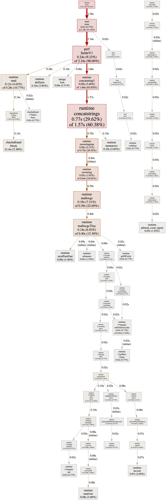

Go 服务性能瓶颈分析：从现象到根因的一套诊疗方法
作者：Artificer老王 | 更新时间：2026-07-28 | 阅读时长：约 14 分钟
线上告警响了：结算接口的 P99 从 30ms 涨到了 120ms。
你打开监控，CPU 没打满、内存也还宽裕，但接口就是慢。
你翻了半天代码，怀疑是 JSON 序列化太慢，又怀疑是那个新加的 map 聚合拖了后腿。
改了一版上线，P99 只降了 8ms。
此时你一阵迷茫，甚至都不确定到底是哪一行在作祟。
这不是"会不会写 Go"的问题，而是"会不会给代码做体检"的问题。
性能瓶颈分析是有一套可复用的诊疗方法的。
本文采用一个虚拟的购物车结算案例，把这套方法完整演示一遍。
问题：一次"结算变慢"的排查困境
很多性能问题不是"算法写错"了，而是"热点藏在一行你从没怀疑过的代码里"。
典型的症状：
- 接口整体延迟升高，但单看 CPU、内存、GC 都很"正常"，看不出是哪一环。
- 你心里有几个嫌疑人（序列化？锁？反射？分配？），但没有数据，只能逐个猜、逐个试。
- 改完上线，效果说不清：到底是这次改动生效了，还是流量本身波动了？
问题本质：你在用"直觉"代替"测量"。
没有 benchmark，你不知道基线是多少；没有 pprof，你不知道热点在哪一行；没有对照，你不知道优化到底有没有用。
性能优化的第一条铁律，也是本文反复强调的：先测量，再优化；用数据说话，而不是用猜测。
🧭 方法论：分析性能瓶颈的心法
核心思想
性能分析不是"写完代码顺手优化一下"，而是一个有入口、有出口的闭环：
- 建立基线：用 benchmark 测出当前耗时/分配，记下"病前指标"。
- 定位热点：用 pprof 抓取 CPU / 内存 profile，看时间到底花在哪。
- 提出假设并尝试修改验证：根据热点，针对性地改代码（这不是凭感觉乱改）。
- 验证效果：再跑 benchmark，用 benchstat 对照，确认"真的变快了、变少分配了"。
- 回归：确保优化没破坏正确性（结果一致）。
分析性能问题的流程其实和"看病"一模一样：先量体温（基线）→ 拍片看病灶（pprof）→ 开药（改代码）→ 复查指标（再 bench）→ 确认康复（回归测试）。
整个流程长这样：
先摸清两个关键问题
动手抓取 profile 之前，如果能根据业务特性初步判断出瓶颈大概在哪个范围，可能会少走很多弯路：
- 是 CPU 密集，还是内存/分配密集？ CPU 高、但内存平稳 → 多半是算法/序列化/反射；内存涨得快、GC 频繁 → 多半是无谓分配。
- 是单次慢，还是并发下慢？ 单请求慢 → 看函数本身；并发一上来才慢 → 多半是锁竞争、goroutine 暴涨、或连接池打满。
如果是CPU的问题，那么重点看"时间花在哪了"；如果是内存问题，那么重点看"对象都是从哪来的"。
优先把基本盘摸清，然后再决定抓 CPU profile 还是 heap profile。
🧰 工具箱：好的医生也要配上合适的工具才能治病
Go 标准工具链自带一套性能分析全家桶，大多数情况下不用装第三方工具就足够了：
| 工具 | 解决什么 | 用法 |
|---|---|---|
go test -bench |
给单个函数测速、数分配 | go test -bench=. -benchmem |
go tool pprof |
看 CPU / 内存热点、调用链 | go tool pprof cpu.out 或直连 :6060/debug/pprof |
benchstat |
判断"到底快没快"（统计对照） | benchstat old.txt new.txt |
go test -trace |
看 goroutine 调度、阻塞、GC 时间线 | go test -trace=trace.out 后用 go tool trace 打开 |
net/http/pprof |
给线上服务开实时 profile 端点 | _ "net/http/pprof" + 暴露 :6060/debug/pprof |
| 火焰图（Flame Graph） | 从"宽柱子"一眼看出最热函数 | go tool pprof -http=:8080 内置 |
💡 其中 -benchmem 是关键 flag：它除了报 ns/op，还会报 B/op（每次分配多少字节）和 allocs/op（每次分配几次）。很多时候"慢"的根因不是 CPU，而是分配太多导致 GC 压力大——allocs/op 往往是比 ns/op 更先该被关注的指标。
go test -bench：先给函数把把脉
写个 *_test.go，用 testing.B 跑 N 次取平均：
func BenchmarkSettleV1(b *testing.B) {
c := sampleCart() // 构造一个中等规模输入
b.ReportAllocs() // 同时统计分配
for i := 0; i < b.N; i++ {
SettleV1(c)
}
}
跑：go test -bench=. -benchmem -run=^$。-run=^$ 是为了跳过普通单元测试，只跑 benchmark，省时间。
⚠️ benchmark 里有个经典坑：如果调用的结果没被"消费"，编译器可能把整个调用优化掉，测出来的就是个空转的数字。稳妥做法是把结果赋给一个包级变量（sink），例如 result = SettleV1(c)，或至少 _, _ = SettleV1(c)——只要返回值参与了"看起来有用"的操作即可。
go tool pprof：看时间到底花在哪
pprof 能抓多种 profile，最常看两个：
- CPU profile：时间花在哪些函数（
-top看表格，-http看火焰图）。 - heap profile：内存从哪些函数分配出来（
go tool pprof mem.out看alloc_objects/alloc_space）。
抓法有两种：离线式（程序里 pprof.StartCPUProfile）和在线式（起 net/http/pprof，远程抓）。
看热点：
go tool pprof -top cpu.out
# 或直连线上服务：
go tool pprof http://localhost:6060/debug/pprof/profile?seconds=10
-top 输出里重点看三列：flat（函数自身消耗，不含它调用的）、cum（含调用链的累计消耗）、以及百分比。
flat 高的函数，就是真正该动手优化的热点。
🔥 火焰图：一眼锁定最宽的柱子
火焰图是 go tool pprof 内置 Web UI 里最直观的一种视图，专门回答"到底哪段调用栈最耗资源"。
-top 给的是数字排名，而人脑看图更快——定位瓶颈时它往往比表格更省时间。
打开方式很简单，给 pprof 加一个 -http 参数，把 profile 喂进去：
# 离线文件
go tool pprof -http=:8080 cpu.out
# 或直连线上服务（边抓边看）
go tool pprof -http=:8080 http://localhost:6060/debug/pprof/profile?seconds=10
浏览器打开 http://localhost:8080 ，顶部一排标签里点 Flame Graph 就能看到（前提是本机装了 Graphviz；没装的话只有火焰图/图视图打不开，表格视图照常可用）。
怎么读懂火焰图？
- 纵轴是调用栈深度：最下面是程序入口（如
main、HTTP handler），往上每一层是它调用的函数，最顶上的方块是"正在 CPU 上跑"的叶子函数。 - 横轴是采样占比，柱越宽占用越多：横轴顺序不代表时间先后，只代表"这块在采样里占了多少比例"。因此火焰图里的"宽" = "热"。
- 找最宽的顶层方块：它就是最热的函数。某个方块宽，往往意味着它下面整条调用链都热。点一下该方块可以 zoom，单独放大这条调用链——当你怀疑某函数慢，点进去就能直接看清它内部是谁占比最大，不用在表格里反推调用关系。
💡 火焰图和 -top 是互补的两把尺：火焰图胜在"调用关系和占比的直觉"，定位阶段用它最快；-top 和 benchstat 胜在"精确的数字排名与统计显著性"，验证阶段更靠谱。
benchstat：别被单次波动骗了
benchmark 单次跑出来的数据可能会抖。
benchstat 会把多次运行做统计对照，告诉你"这次改动在统计上到底快没快"：
go test -bench=. -count=10 > old.txt # 改之前
# ... 改代码 ...
go test -bench=. -count=10 > new.txt # 改之后
benchstat old.txt new.txt
它会给出 sec/op / B/op / allocs/op 的对照，以及置信区间。结论是"p < 0.05 显著变快"还是"只是噪声"，一目了然。
🔬 实战：用这套流程诊疗一个结算函数
下面用一个模拟的完整可跑、数据真实的案例：一个购物车结算函数，初版埋了三个常见性能的坑，我们用上面的方法把它们一个个揪出来。
初版 V1（埋了三个坑）
SettleV1 的逻辑本身没错——算总价、返回序列化结果。但写法上埋了三个真实项目里高频出现的反模式：
func SettleV1(c Cart) (string, float64) {
// 坑 1：逐行 json.Marshal 再拼字符串，每行都触发一次反射
parts := make([]string, 0)
for _, it := range c.Items {
b, _ := json.Marshal(it) // 每行一次反射序列化
parts = append(parts, string(b))
}
blob := "[" + strings.Join(parts, ",") + "]"
// 坑 2：又用 map 做"单价聚合"，纯属多余，却额外分配一棵哈希表
byPrice := make(map[float64]int)
for _, it := range c.Items {
byPrice[it.UnitPrice]++
}
_ = byPrice
// 真正有用的总价
var total float64
for _, it := range c.Items {
total += it.UnitPrice * float64(it.Qty)
}
return blob, total
}
三个坑分别是：逐行序列化 + 字符串拼接、未预分配的 slice 反复扩容、毫无收益却分配哈希表的 map。
任何一个单独看都不起眼，叠在一起就是热点。
第一步：写 benchmark，建立基线
先不急着改，用 benchmark 量出 V1 的"病前指标"。
输入是 50 个商品行的购物车，同机多次运行取代表值：
go test -bench=SettleV1 -benchmem -run=^$ -count=5
V1 的基线（多次运行取代表值）：
BenchmarkSettleV1-12 ~45,000 25,900 ns/op 19,234 B/op 166 allocs/op
记下来：每次调用约 25.9µs，分配 19KB，产生 166 次堆分配。
这个 166 allocs/op 已经是个危险信号——一次结算分配了一百多次，高并发下 GC 压力会非常可观。
第二步：pprof 抓热点，定位"凶手"
用 pprof.StartCPUProfile 对 V1 打 3 秒负载，再 -top 看热点（这是真实抓出来的）：
flat flat% cum cum%
700ms 26.12% 1380ms 51.49% runtime.concatstrings
340ms 12.69% 2490ms 92.91% perf.SettleV1
220ms 8.21% 360ms 13.43% runtime.mallocgcTiny
200ms 7.46% 1580ms 58.96% runtime.concatstring3
100ms 3.73% 620ms 23.13% runtime.rawstringtmp
（这是 go tool pprof -top cpu.out 的真实输出。为聚焦业务，只保留了拼接/分配相关的行：duffzero、rand、memmove 等运行时噪音行，以及 strings.Join 等 flat 很小的中间层，均已省略；保留下来的每一行 flat% / cum% 都是占采样总量的比例，独立成立、可重跑复现。）
这张图把三个坑一次性暴露了：
perf.SettleV1自身的cum占 92.91%——确认热点就在这个函数内部，不是调用方。- 它下面清清楚楚挂着
runtime.concatstrings/concatstring3（逐行string(b)拼接）、strings.Join（中间层拼装）、mallocgcTiny（堆分配）——正好对应"逐行序列化 + 字符串拼接"那两个坑。 166 allocs/op的物理证据也在这：这么多次分配，GC 不累才怪。
📌 注意看 flat 和 cum 的区别：SettleV1 的 flat 只有 340ms（它自己写的代码直接消耗的 CPU），但 cum 是 2490ms——因为它调用了 concatstrings、Join、mallocgcTiny 这些耗时函数。真正的"凶手"在它的下游，pprof 帮你把调用链摊开了。
同一份 cpu.out，换火焰图视角看（真实抓出来的栈，节选最热的几条）：
runtime.main
└─ main.main (profile_main 的采样入口)
└─ perf.SettleV1 ◀── 这条调用链的柱子最宽，占采样约 93%
├─ runtime.concatstring3 (收尾 "["+...+"]" 的三参数拼接)
│ └─ runtime.concatstrings (真正干活的拼接，flat 最大的一支)
│ └─ rawstringtmp → mallocgcTiny (反复申请 buffer，166 次分配落在这)
├─ strings.Join (中间层 []string 拼装，独立一支、占比很小)
└─ (map 聚合的 rand / duffzero 等开销，占比小)
打开 go tool pprof -http=:8080 cpu.out 点 Flame Graph，你会看到 SettleV1 这条栈从底到顶贯穿一大片，下方 concatstrings / concatstring3 / mallocgcTiny 的方块并排很宽——和上面 -top 表的数字完全对得上：最宽的顶层方块，正是 concatstrings 这类"把切片逐个拼成字符串"的运行时函数。表格告诉你"谁最热"，火焰图告诉你"它的调用链长什么样、谁叠在谁上面"，两者一结合，瓶颈就再无死角。
火焰图读起来有个直觉陷阱：别被"最顶上的方块"带偏。
顶层是正在跑的叶子函数（比如 concatstrings），但往往整条调用链都该优化——真正要改的是它的上游 SettleV1（业务逻辑里"逐行序列化"那个写法），而不是去改运行时拼字符串本身。
火焰图负责"指路"，动手改的还是你的业务代码。
下面是上面那段 pprof 采样真实渲染出来的火焰图（V1 热点），从左往右找最宽的柱子，从下往上看调用栈，瓶颈一目了然：

这张图就是 go tool pprof -http=:8080 cpu.out 里 Flame Graph 视图的真实输出。
可以看到 SettleV1 自顶向下的整条栈几乎占满画面宽度，"把切片逐个拼成字符串"的 concatstrings / concatstring3 以及内存分配 mallocgcTiny 是最宽的几块——和前面 -top 表里 cum 92.91%、166 allocs/op 完全呼应。
第三步：提出假设并改（V2）
既然热点明确，优化就是"把不该有的环节删掉"：
- 坑 1 → 整张购物车一次性
json.Marshal，反射只发生一次，且标准库内部会预分配缓冲。 - 坑 2 → 那个 map 本来就毫无收益，直接删掉。
- 顺带 → 中间层
[]string+strings.Join整个消失，总价循环和序列化合并。
func SettleV2(c Cart) (string, float64) {
blob, err := json.Marshal(c) // 一次反射 + 内部预分配
if err != nil {
return "[]", 0
}
var total float64
for _, it := range c.Items {
total += it.UnitPrice * float64(it.Qty)
}
return string(blob), total
}
第四步：再 bench，验证效果（用数据收尾）
改完重跑 benchmark，同一份输入、同一台机器：
BenchmarkSettleV1-12 ~45,000 25,900 ns/op 19,234 B/op 166 allocs/op
BenchmarkSettleV2-12 ~94,000 12,560 ns/op 6,180 B/op 3 allocs/op
把两次放一起对比：
| 指标 | V1（优化前） | V2（优化后） | 改善 |
|---|---|---|---|
| 耗时 ns/op | 25,900 | 12,560 | ↓ 约 2.06×（快一倍） |
| 分配 B/op | 19,234 | 6,180 | ↓ 约 3.11×（内存少 2/3） |
| 分配次数 allocs/op | 166 | 3 | ↓ 约 55×（几乎零分配） |
💡 有读者会问：第四步不是该用 benchstat 吗？这里说明一下——benchstat 需要同一个 benchmark 在改动前后的多轮数据才能配成对照组，而 V1/V2 是两个不同名的函数，天然配不成对（强行对照，显著性只会标 ?）。所以本例直接对照绝对值；日常优化同一个函数时，再按方法论里那样存 old.txt / new.txt 上 benchstat。
📌 这个案例最有价值的结论是最后一行：瓶颈 90% 不在"算总价"这个业务上，而在"怎么把结果变成字符串"这件顺手的事上。allocs/op 从 166 降到 3，意味着 GC 压力被砍掉了 98%——高并发下延迟抖动的改善，会比这 2 倍耗时更明显。
优化前后，逻辑上"算出的总价、序列化出的 JSON"必须一致。务必保留正确性校验（比如对比 V1/V2 两份 blob 与 total 相等），别为了快把结果算错——这是闭环里"回归"那一步的意义。
整个诊疗闭环串起来就是：基线（166 allocs）→ pprof 定位（concatstrings/Join/mallocgcTiny 在 V1 下游）→ 改 V2（一次序列化、删 map）→ 再 bench 验证（3 allocs、快 2 倍）。
🚧 局限性与踩坑
性能分析方法很成熟，但有它的局限性：
-
benchmark 不等于真实负载：微基准（micro-benchmark）测的是"单个函数、固定输入"，而线上是"并发 + 真实分布 + 外部依赖"。V1/V2 的 2 倍差距，在真实服务里可能被锁、网络、DB 淹没。
💡 缓解：微基准用于"定位函数级瓶颈"，端到端延迟还得靠压测（如k6、vegeta）和线上 pprof 交叉验证。 -
benchmark 会被编译器"作弊"：前面提过，结果不被消费时整段调用可能被优化掉，测出虚假高数字。
💡 缓解：用包级 sink 变量消费结果，或确认返回值参与了可观测的操作。 -
pprof 采样有开销、有误差：CPU profile 默认 100Hz 采样，短函数、低频路径可能采样不到；火焰图上的数字要理解为"比例"而非"绝对值"。
💡 缓解：采样窗口拉长（10~30s）、制造足够负载，让热点占比足够高。 -
heap profile 看的是"分配"不是"占用"：
alloc_space是累计分配量；如果关心"此刻内存占多少"，要看inuse_space。别看错维度。 -
优化可能引入复杂度：把"逐行序列化"改成"一次序列化"很简单，但有些优化（对象池、手写缓存、unsafe）会显著抬高维护成本。
💡 金句：先量出来真的慢、再改；别为了 1% 的边际收益，背上 10 倍的维护债。 -
线上 pprof 是敏感端点：
net/http/pprof暴露了内部信息，绝不能裸奔在公网。
⚠️ 必须放在内网 / 加鉴权 / 或用临时端口按需开启，用完即关。
🚀 进阶：把性能分析做成常态
在线 pprof：给线上服务开个"体检窗口"
真实服务的瓶颈往往只在并发下出现，离线 benchmark 抓不到。
这时用 net/http/pprof 给服务开一个内网端点，运行时按需抓取：
import _ "net/http/pprof" // 注册 /debug/pprof/* 路由
func main() {
go func() {
// 注意：只在内部/临时端口暴露，且需鉴权，绝不公网裸奔
http.ListenAndServe("localhost:6060", nil)
}()
// ... 正常业务 ...
}
然后运维或你本人，在怀疑慢的时间窗口抓一份：go tool pprof http://<内网IP>:6060/debug/pprof/profile?seconds=20，立刻能看到此刻线上的真实热点。
仓库里的 server.go 就是这个用法的完整演示（它故意用 V1 留坑，方便你抓到热点）。
持续 profiling：让体检变成每日打卡
单点排查是"病了才查"。
更进一步的团队会做持续 profiling（如 Parca、Pyroscope 这类基于 pprof 协议、持续上报并长期留存 profile 的方案），把所有服务的 CPU/内存 profile 持续上报、长期留存。
这样不仅能查"现在为什么慢"，还能回答"上周上线后哪段代码变慢了"——性能回归在合并前就能被发现。
压测 vs 微基准，各管一段
| 手段 | 回答的问题 | 何时用 |
|---|---|---|
微基准 go test -bench |
这个函数改了之后快没快？ | 定位/验证函数级优化（如本文 V1→V2） |
压测 k6 / vegeta |
整个服务扛不扛得住、P99 多少？ | 评估端到端容量、找系统级瓶颈 |
| 线上 pprof | 此刻生产环境热点在哪？ | 真实负载下的定位，最可信 |
它们三个是互补的：微基准定"点"，压测定"面"，线上 pprof 定"真相"。
📌 总结
- 是什么：性能瓶颈分析是一套"测量→定位→优化→验证"的闭环方法论，不是写完代码顺手调一下。核心工具是
go test -bench（测速）、go tool pprof（抓热点）、benchstat（统计对照）。 - 黄金顺序：先问"CPU 密集还是分配密集、单次慢还是并发慢"，再决定抓 CPU profile 还是 heap profile；先看
allocs/op往往比先看ns/op更能嗅到问题。 - 实战结论：本文购物车结算案例中，V1 的瓶颈 90% 不在业务计算，而在"逐行序列化 + 字符串拼接 + 多余 map"；优化后耗时 ↓约 2 倍、分配 ↓约 3 倍、分配次数从 166 降到 3（↓约 55 倍）——全部由真实 benchmark 数据支撑。
- 看 pprof 的诀窍：
flat看函数自身、cum看含调用链的累计；热点常在"下游"（如concatstrings/mallocgcTiny挂在业务函数之下）。 - 局限性：微基准不等于真实负载、benchmark 会被编译器优化、pprof 有采样误差、heap 要看对维度（alloc vs inuse）、优化别为边际收益背上维护债、线上 pprof 必须内网+鉴权。
- 怎么用：建立基线 → pprof 定位 → 针对性改 → benchstat 验证 → 回归确认。把它做成常态（在线 pprof + 持续 profiling），性能问题就从"救火"变成"体检"。
如果你正对着一个"感觉慢但说不清哪慢"的接口发愁，先别急着改代码——写个 benchmark、抓个 pprof，让数据告诉你凶手在哪。
很多时候，真相会简单得让你意外。
完整可运行示例代码：本文所有代码均已上传至 GitHub 仓库 os-artificer/ebooks，位于 src/golang/perf-bottleneck/ 目录，包含：
settle_v1.go/settle_v2.go：结算函数的初版（埋坑）与优化版。model.go：购物车与商品行的数据模型。bench_test.go：V1/V2 的 benchmark，进入该目录执行go test -bench=. -benchmem即可复现文中数据。server.go：演示net/http/pprof在线抓热的用法（用go run server.go启动，访问http://localhost:6060/debug/pprof/）。profile_main.go：演示脱离 HTTP、程序内pprof.StartCPUProfile离线抓热的用法。
文中的代码片段为说明原理的伪代码或节选，正式可编译版本请查看 src/golang/perf-bottleneck/ 下对应的 .go 文件。
本文首发于公众号 Artificer老王的学习笔记，转载请注明出处。